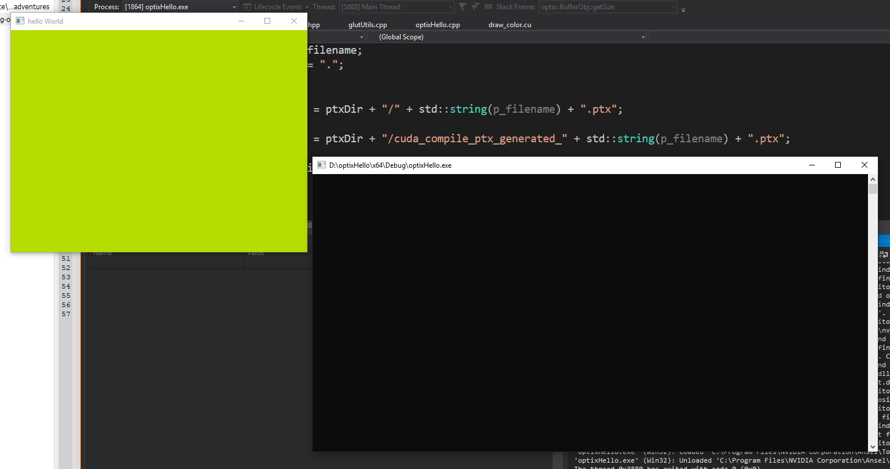

- Mon 08 April 2019
- micro adventures
I wanted to get the optixHello project compiling and running on my machine. I havent sat down and learned CMake yet, so typically I create a new Visual Studio project and begin this micro-adventure
Slowly but surely, I will create a pathtracer with Optix.
Download The Dependencies
- CUDA (I am using version 10)
- Optix SDK (I am using version 6)
- FreeGLUT
- GLEW
- sutil (located in the SDK examples, this will have to be compiled or included in the project)
Setting up the Visual Studio Project
Create a new Visual Studio Project with the CUDA Runtime Template
This will automatically compile CUDA C/C++ source files
Copy the source files from the optixHello demo in the SDK examples.
Should be two files draw_color.cu and optixHello.cpp
We need to modify some Visual Studio project propeties to correctly compile .cu to ptx
1. C/C++
* Additional Include Directories: Add the includes for the Optix SDK and the library dependencies
* Add NOMINMAX to the list of preprocessor definitions
2. CUDA C/C++
* Compiler Output: Change the filename to something you will remember and the extension should be ptx
* Additional Include Directories: Add the includes for the Optix SDK
* Set Keep Prepprocessed Files to Yes (--keep)
* NVCC Compilation Type should be Generate.ptx file (--ptx)
* Turn Debug Information to No in Device and Host
3. Linker
* Additional Dependencies should be added with the dependencies' library files plus glu32.lib and opengl32.lib
One Important Note: In order to use Optix, you have to read the .ptx file then pass the string into Optix to be used. If you rely on sutil.h, there is a default file name that it looks for. Change the compiler output filename (in CUDA C/C++ Properties) to reflect this
Optional: Replace the sutil.h dependency
I really disliked the reliance on sutil, its just so thick... So I worked towards the removal.
In order to compile and run OptixHello without sutil, we need to replace the functions that the demo relies on. * initGlut * displayBufferGlut * getPtxString
It was straightforward enough to create a seperate c++ namespace with just these functions
Result So Far
